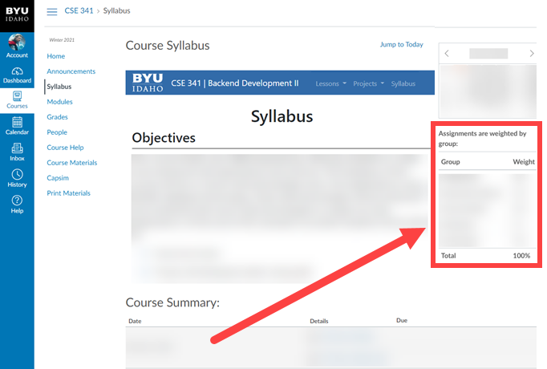

Syllabus
Objectives
This course builds on other web classes offered by the university and helps students create more advanced web applications and services. The emphasis of this course will be on server-side technologies and n-tier applications using NoSQL database technology. Client side technologies will be enhanced and combined with server-side technologies to create rich web applications. At the end of this semester successful students will be able to:
-
Understand the difference between server-side rending and REST APIs and how to implement them
-
Incorporate a secure authentication system in a web application that traverses the full stack
-
Deploy a full stack application to the web
-
Develop, document and deploy a secure REST API that performs CRUD operations on a NoSQL database
-
Effectively contribute to a team while learning independently
Learning Model Architecture
Prepare: You will be reading reference and tutorial websites.
Teach One Another: You will be participating in team activities, posting helpful links, and working on team projects.
Ponder and Prove: You will be doing lessonly programming assignments (both individual and team-based).
Prerequisites
-
WDD230 - Web Frontend Development I
-
OR
-
CS213 - Web Engineering I
Course Communication
Microsoft Teams
-
We will use Teams as the communication tool in this class. Announcements and class information will be communicated here. It is your responsibility to stay up to date with this. Please install it on your computer and mobile device.
-
WE WILL NOT communicate via I-Learn or email, we will only use Teams.
-
Download Teams here: https://www.microsoft.com/en-us/microsoft-teams/download-app
-
If you haven't already been added to the team, Join Teams with the link provided by your instructor
Course Materials Needed
-
The "Textbook" is an Academind videos course. This can be accessed along with the coupon code from the syllabus in I-learn.
-
Web hosting at Heroku. Free for basic usage.
-
Github account
-
VS Code (or another text editor of your choice)
-
NodeJS installed on computer
Course Tasks
Readings and Preparation Quizzes
Each lesson, you will have a reading assignment to do. The majority of these consist of videos from the Academind course. You are encouraged to watch all of these, and program alongside them in VS Code to help with your project. With that said, the Academind instructor also provides zip files at the end of each module to help get people up to speed on everything that took place in the lesson. Ideally, you will have time to engage in each of these videos because it will help with your learning in many ways and help prepare you for the final project. With that said, if you not have enough time you may find it useful to watch the videos at an accelerated speed without programming alongside them, then download the zip files at the end of the lessons to fill any gaps in understanding that you have.
After each reading, there will be a preparation quiz to submit in I-learn. These are not meant to be stressful, but are meant to assess your understand. These are for your benefit. These can be taken as many times as you want, with the highest grade going into the gradebook.
Team Activity Instructions
Each lesson, there will be a team activity designed to help reinforce the concept that will be covered that lesson, and give students an opportunity to teach one another, and to be prepared for the lesson assignment. These activities are to be completed in teams, and are designed to be completed in 60-90 minutes. Each activity is designed to be a straightforward application of the concepts of the lesson to help prepare students for the lessonly assignment, which will require significantly more application, adaptation, and problem solving skills.
Assignments
Each lesson you will have a personal assignment due at 11:59pm on Saturday. These assignments are similar to your team activities each lesson as far as the content is concerned, but is meant to expand and prove your knowledge.
Projects
Your projects throughout the semester will either be individual or with a team, according to your instructor's discretion. Regardless, you will have two large projects to complete this semester. One will be alongside the Academind course, and the other will be for the second half of the semester to apply what you have learned. This second project will account for the majority of your grade in the course.
Course Expectations and Policies
Late Work Policy
In short: No late work is accepted.
This course is all about preparing students for internships and careers. Deadlines exist and are depended upon in the professional world. Students in this course will be expected to schedule their time in such a way that they are able to comply with these deadlines in a professional matter.
Canvas is configured to deduct 20% per day starting with one minute after the deadline until it is graded. Anyone who has not submitted the assignment by the time they have all been graded will receive a zero. Once an assignment has been graded, reviews and grade alterations will not be made on additional submissions.
Your ability to plan ahead, and be responsible for your work and the associated deadlines will be vital in your success in furthering both your education and career.
Grading Breakdown
Grades are weighted in this course by group. Please view the syllabus in I-learn to see the weights for each assignment group.
Grading Criteria
Grades for most assignments (unless otherwise noted) are assigned in broad terms according to the following scale:
-
50% - Some attempt was made
-
70% - Developing, but significantly deficient
-
85% - Slightly deficient, but still mostly adequate
-
93% - Meets Requirements
-
100% - Shows Creativity, and a desire to excel above and beyond
This course will use the following standard BYU-Idaho grading scale:
| Letter Grade | Percentage Range |
| A | 100% – 93% |
| A- | 92% – 90% |
| B+ | 89% – 87% |
| B | 86% – 83% |
| B- | 82% – 80% |
| C+ | 79% - 77% |
| C | 76% – 73% |
| C- | 72% – 70% |
| D+ | 69% – 67% |
| D | 66% – 63% |
| D- | 62% – 60% |
| F | 59% – 00% |
Changes to Schedule and Assignments
Schedules, assignments, and policies are subject to change. You will be notified of any changes by your instructor.
Plagiarism Policy
Just like a writing class, software programming classes must have policies to prevent plagiarism.
Your code must be created by you. If you use any code from online or from another person (i.e. team member, previous student, roommate, relative, tutor), you must provide credit in the comments of your code. The comments must include the name of the person or the website URL. You may not get full points if you use too much work from others. Using code from others without giving proper credit is an honor code violation resulting in both a grade of 0 and a report to the honor office. When in doubt, provide credit in your code.
The only exception to this rule is any code or assistance you receive from your teacher or an official class TA. If you get help from the Tutoring Center or from the Computer Science Help Center, you must provide credit in your code.
The penalty for copying or plagiarism of assignments might be one or more of the following: -100% on an assignment, being asked to withdraw from the class, a failing grade in the class, or disciplinary action by the University.
Please reference the University Academic Honesty policy here: http://www.byui.edu/student-honor-office/ces-honor-code/academic-honesty
Extenuating Circumstances
An “Extenuating Circumstance” is defined as one involving either a family or medical emergency. If an “Extenuating Circumstance” prevents you from meeting any expectation or deadline, please try to communicate with me before the expectation or deadline is missed.
Preventing Sexual Misconduct
BYU-Idaho prohibits sex discrimination against any participant in its education programs or activities. Prohibited sex discrimination includes incidents of sexual harassment (including sexual violence), dating violence, domestic violence, sexual assault, and stalking (collectively “sexual misconduct”).
As an instructor, one of my responsibilities is to help create a safe learning environment for my students and for the campus as a whole. University policy requires that I report all incidents of sexual misconduct that come to my attention. If you encounter sexual misconduct, please contact the Title IX Coordinator at titleix@byui.edu or 208-496-9200. Additional information about sexual misconduct and available resources can be found at www.byui.edu/titleix.
Disability Services
BYU-Idaho does not discriminate against persons with disabilities in providing its educational and administrative services and programs, and follows applicable federal and state law. This policy extends to the University’s electronic and information technologies (EIT).
Students with qualifying disabilities should contact the Disability Services Office at disabilityservices@byui.edu or 208-496-9210. Additional information about Disability Services resources can be found here: http://www.byui.edu/disabilities.
Additional Policies
Please review the following important University Policies that apply to this course:
-
Academic Student Support: http://byui.edu/academic-support-centers.
-
Dress and Grooming Standards: http://www.byui.edu/student-honor-office/ces-honor-code/dress-and-grooming.
-
Student Grievances (On Campus Students): http://www.byui.edu/office-of-compliance/complaints.
-
Student Grievances (Online Students): http://www.byui.edu/9-student-online-grievance-policy.